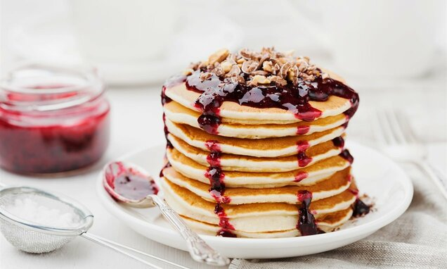
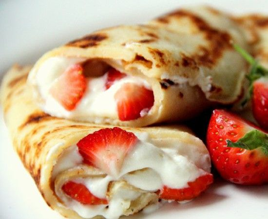

Svet palačinki
Naslovna
Napravi svoju palačinku
Poruči gotove palačinke
Kontakt
Odaberi svoju palačinku:

Integralna palačinka
- 300 din
Integralne palačinke su sjajnog ukusa, ne opterećuju nas suvišnim kalorijskim unosom,
daju mogućnost da na najukusniji način unesemo vlakna u ishranu. Podrazumevaju
kombinaciju više vrsta zdravog brašna, te tako dobijamo čitav spektar nutrijenata koji
unosimo kroz jedan obrok.
Čokoladna palačinka
- 300 din
Od svih vrsta palačinki u našem su podneblju najpopularnije su one s čokoladom. Bilo
da su namazane namazom od čokolade ili je testo napravljeno s kakaom čokoladne
palačinke su omiljena poslastica i dece i odraslih. Ukoliko voliš Nutellu, Plazmu i
sladoled onda je naša čokoladna palačinka pravi izbor za tebe!

Proteinska palačinka
- 350 din
Ukoliko u ishrani izbegavate proste ugljene hidrate, trenirate i potreban vam je dodatni
unos proteina, proteinske palačinke su sjajan slatkiš koji se sprema od jaja i jagode i
peče na standardan način. Začinjene cimetom, predstavljaju pravo malo slatko uživanje.
Isprobajte i bogate proteinske palačinke s posnim sirom, koje vas sigurno neće ostaviti
ravnodušnim.
Američka palačinka
- 250 din
Već par godina unazad, američke palačinke su se sa filmova i iz naših dalekih želja,
preselile u našu palačinkarnicu i potpuno su dostupne vašim čulima. Vazdušaste, meke,
prelivene javorovim sirupom, medom ili čokoladom, u kombinaciji sa borovnicama,
šlagom ili sladoledom, brzo su nas osvojile. Postale su još jedna varijanta svima
nam omiljenih palačinki ali ovog puta na sasvim drugačiji način.
Palačinka od heljde
- 350 din
Odličan izbor kada su zdrava, bezglutenska brašna u pitanju, je heljdino. Heljda je žitarica
koja se tradicionalno koristila u našoj ishrani od davnina, obiluje vitaminima i mineralima,
sadrži vlakna, antioksidanse, gvožđe i niskokalorično je. Popularne su razne vrste peciva i
hleba od heljde upravo zbog zdravih i blagotvornih karakteristika a palačinke od heljdinog
brašna nisu izuzetak.
Božićna palačinka
- 400 din
Božićna palačinka je specijalna vrsta palačinke koju smo osmislili povodom predstojećih
novogodišnjih praznika. Miris cimeta i đumbira je ono što ovu palačinku čini tako posebnom.
Ispunjena medom i posuta najfinijim šećerom, ova palačinka će vas neodoljivo podsetiti na
ukus božićnih kolačića koje svi volimo.
Ljubavna palačinka
- 350 din
Ljubavna palačinka je zapravo japankse sufle palačinke sa jagodom. Japanske sufle palačinke su
meke, vazdušaste i slatke. Osim toga što se tope u ustima, možete se igrati i nadevima. Japanci
su se setili da dva dezerta spoje u jedan i tako su nastale sufle palačinke. Odmah ćete ih prepoznati
po izgledu, a iako se za pripremu koriste slični sastojci kao i za američke palačinke ipak postoji jedan
detalj koji ih razlikuje od svih ostalih verzija. Naime, dok se palačinke "peku" Japanci teflon poklope s
poklopcem i one se u stvari "kuvaju".
Ime:
Prezime:
Adresa:
Broj telefona:
Prikaži formu za unos podataka
Obriši sve unete podatke
Završi porudžbinu